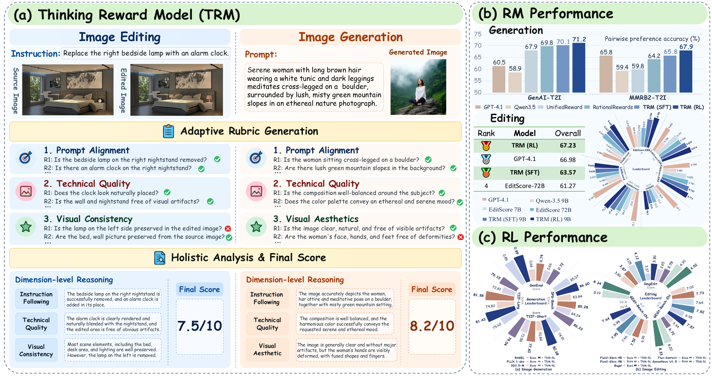
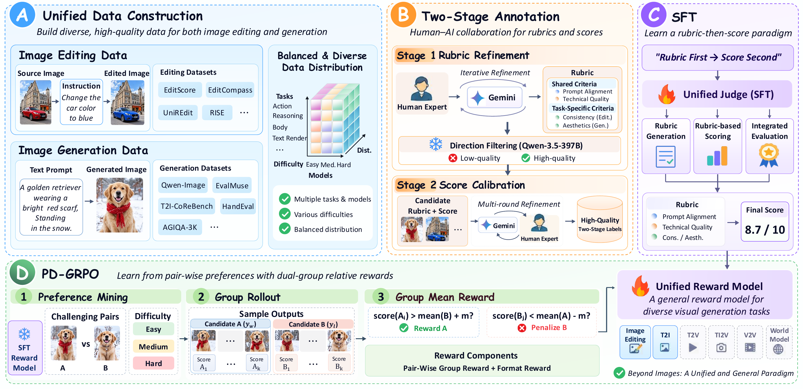
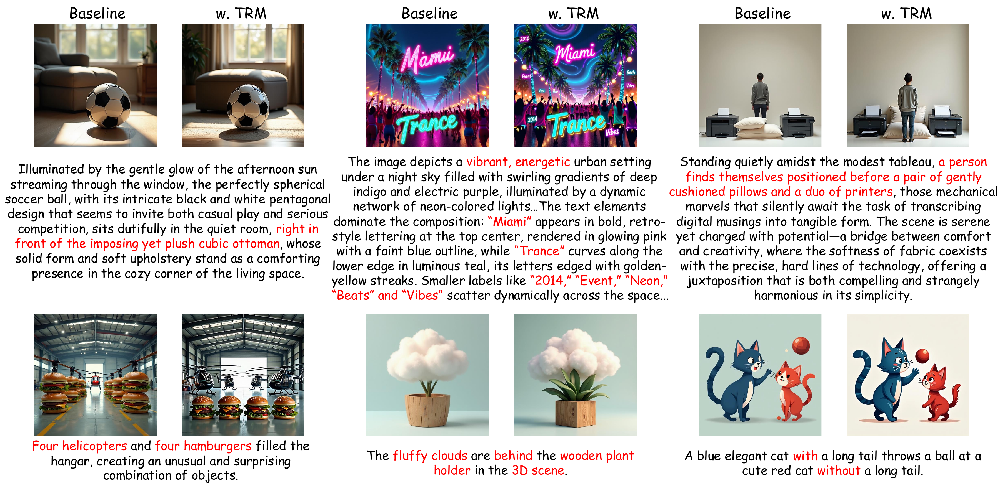
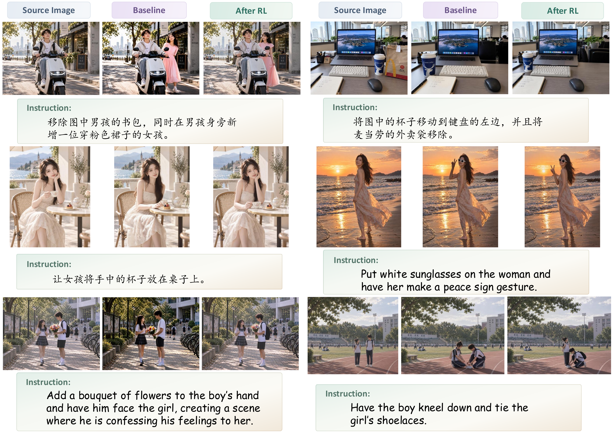

01R
Determine
Formulate atomic rubrics around the task condition and candidate image.
WHAT SHOULD WE CHECK?A NEW PERSPECTIVE ON VISUAL REWARDS
Thinking Reward Model for Visual Generation

Visual reward models often map an image directly to a score, leaving the evaluation criteria implicit. TRM makes those criteria explicit: it generates rubrics for each individual case, inspects the candidate against them, and aggregates the evidence into a fine-grained reward. The same process supports both image generation and editing, while adapting what it checks to the task and the image.
A shared evaluation process across tasks. Criteria that adapt to every candidate.
Formulate atomic rubrics around the task condition and candidate image.
WHAT SHOULD WE CHECK?Evaluate the candidate against each rubric with an explicit Yes / No judgment.
WHAT DOES THE IMAGE SHOW?Summarize the evidence into assessments for each evaluation dimension.
HOW DO THE DETAILS ADD UP?Produce a fine-grained pointwise reward grounded in the assessment.
HOW WELL DOES IT PERFORM?Conventional pairwise optimization can push scores toward opposite extremes. Pairwise Dual-Group Relative Policy Optimization rewards sufficient separation, then stops rewarding further gap expansion.
The complete data construction and training pipeline is shown below, from structured annotation and supervised fine-tuning to preference optimization.

| Model | Parameters | GenAI-T2I ↑ | MMRB2-T2I ↑ |
|---|---|---|---|
| GPT-4.1 Proprietary | — | 60.5 | 65.8 |
| Gemini 3 Pro Proprietary | — | 73.1 | 74.4 |
| Qwen3-VL | 32B | 66.9 | 64.1 |
| HPSv3 | 7B | 70.8 | 60.2 |
| UnifiedReward | 7B | 67.9 | 59.8 |
| RationalRewards | 8B | 69.8 | 64.2 |
| Qwen3.5 · same-protocol baseline | 9B | 58.9 | 59.4 |
| TRM (SFT) | 9B | 70.1 | 65.8 |
| TRM (RL) OURS | 9B | 71.2 | 67.9 |
Selected baselines from the manuscript. Accuracy (%), higher is better. Pointwise models are evaluated over non-tied predictions.
| Model | Parameters | ERB overall ↑ | MMRB2 (%) ↑ | EditReward-ERB (%) ↑ |
|---|---|---|---|---|
| GPT-4.1 Proprietary | — | 0.705 | 68.2 | 72.1 |
| Gemini 3.1 Pro Proprietary | — | 0.841 | 74.9 | 73.9 |
| Qwen2.5-VL | 72B | 0.621 | 65.8 | 67.8 |
| EditScore | 7B | 0.659 | 51.3 | 60.0 |
| EditScore | 72B | 0.703 | 53.3 | 65.2 |
| FIRM-Reward | 8B | 0.607 | 44.5 | 50.9 |
| Qwen3.5 · same-protocol baseline | 9B | 0.401 | 30.9 | 33.8 |
| TRM (SFT) | 9B | 0.743 | 53.0 | 67.8 |
| TRM (RL) OURS | 9B | 0.773 | 58.2 | 71.3 |
Selected metrics and baselines from the manuscript. ERB overall refers to EditScore-ERB; EditReward-ERB uses the 2-path metric. Higher is better.
Baseline TRM-guided RLΔ absolute score change
| Model | GenEval ↑ | DPG-Bench ↑ | TIIF-Short ↑ | TIIF-Long ↑ |
|---|---|---|---|---|
| BAGEL | 0.860.89Change: +0.03 | 85.0786.60Change: +1.53 | 74.9180.68Change: +5.77 | 75.6281.43Change: +5.81 |
| FLUX.1-dev | 0.660.73Change: +0.07 | 83.8485.28Change: +1.44 | 70.8477.60Change: +6.76 | 74.8281.38Change: +6.56 |
| SD3.5-M | 0.660.72Change: +0.06 | 84.2486.23Change: +1.99 | 72.8678.04Change: +5.18 | 72.8176.15Change: +3.34 |
| Model | ImgEdit ↑ | GEdit-Bench-EN | GEdit-Bench-CN | ||||
|---|---|---|---|---|---|---|---|
| G_SC ↑ | G_PQ ↑ | G_O ↑ | G_SC ↑ | G_PQ ↑ | G_O ↑ | ||
| Flux2-Klein-4B | 3.803.87Change: +0.07 | 7.688.20Change: +0.52 | 7.317.74Change: +0.43 | 7.027.73Change: +0.71 | 7.657.90Change: +0.25 | 7.277.65Change: +0.38 | 6.967.52Change: +0.56 |
| Flux2-Klein-9B | 4.054.13Change: +0.08 | 8.398.43Change: +0.04 | 7.577.82Change: +0.25 | 7.647.82Change: +0.18 | 8.378.45Change: +0.08 | 7.597.95Change: +0.36 | 7.667.95Change: +0.29 |
| BAGEL | 3.373.91Change: +0.54 | 7.898.39Change: +0.50 | 6.687.26Change: +0.58 | 6.957.57Change: +0.62 | 7.928.40Change: +0.48 | 6.767.33Change: +0.57 | 6.987.64Change: +0.66 |
| Flux-Kontext | 3.653.79Change: +0.14 | 7.077.22Change: +0.15 | 7.307.51Change: +0.21 | 6.446.72Change: +0.28 | — | — | — |
| SenseNova-U1.5 | 4.304.52Change: +0.22 | 9.109.14Change: +0.04 | 7.637.83Change: +0.20 | 8.208.33Change: +0.13 | 9.109.09Change: −0.01 | 7.617.87Change: +0.26 | 8.198.34Change: +0.15 |
G_SC, G_PQ and G_O follow the manuscript's metric names; G_O is the overall score. — Not reported.
More faithful instructions. More precise compositions. Explore visual models before and after TRM-guided RL.

